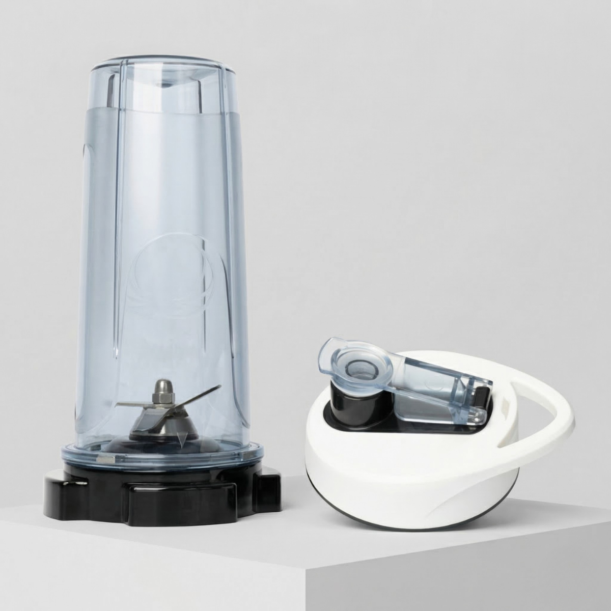
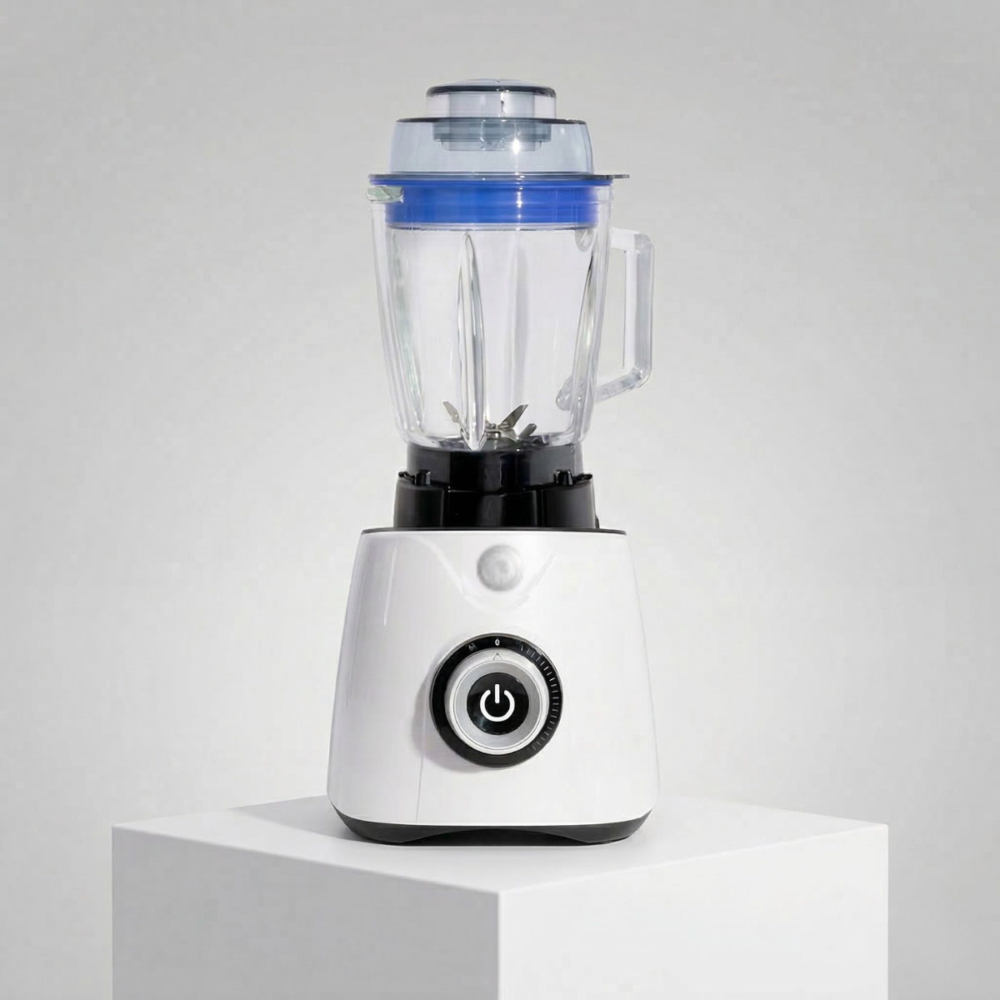
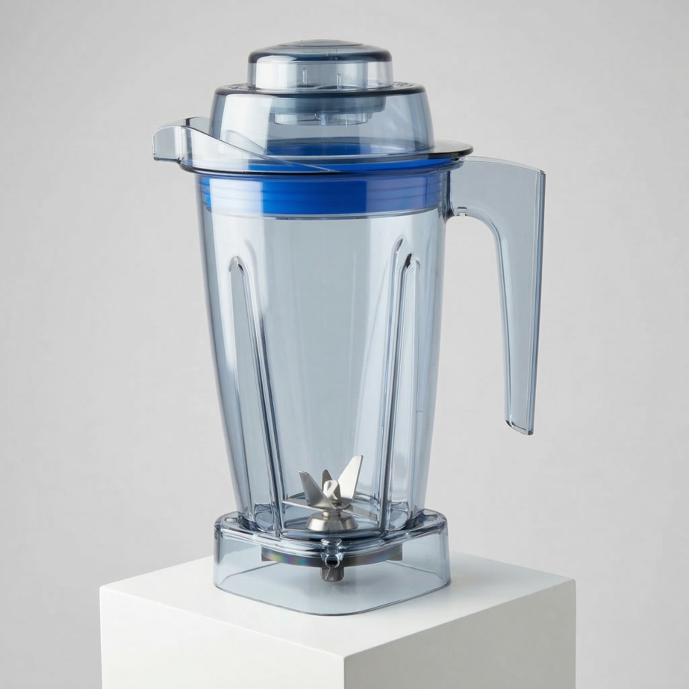
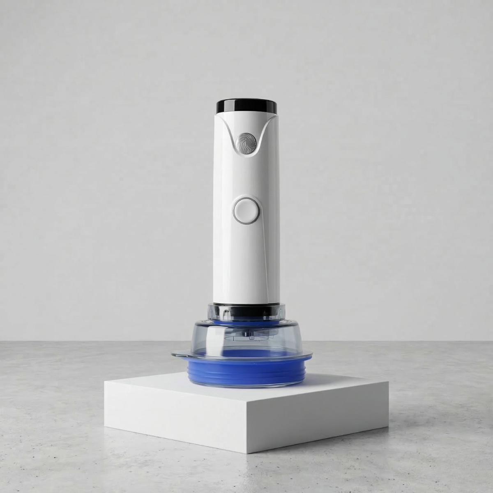

Max Cup
Accesorio práctico para porciones individuales y preparaciones de uso más inmediato.
Disponible por separado como complemento del sistema principal.

Un sistema de licuado de alto desempeño, diseñado para preparar bebidas, mezclas y recetas con mayor potencia, control y versatilidad en la cocina diaria.
La Power Blender Max está pensada para quienes buscan una experiencia más amplia de licuado, con potencia, control y la posibilidad de complementar el sistema con accesorios opcionales por separado.
La Power Blender Max es una licuadora diseñada para ofrecer más control, potencia y flexibilidad en la preparación diaria de bebidas y mezclas.
El sistema combina un motor potente con varias velocidades para adaptarse a diferentes consistencias y necesidades de preparación.
Además, puede complementarse con accesorios opcionales que amplían aún más sus posibilidades de uso.
El sistema principal se presenta como una solución de licuado de uso versátil para la cocina cotidiana.
El motor de 1,500 watts está pensado para un desempeño sólido en distintas preparaciones.
Sus 10 velocidades permiten adaptar mejor la textura y la intensidad según el tipo de mezcla.
Es una opción práctica para bebidas, mezclas y preparaciones que requieren un sistema más robusto.
Puede complementarse con Max Cup, jarra Tritán y Fresh Max, disponibles por separado.

Accesorio práctico para porciones individuales y preparaciones de uso más inmediato.
Disponible por separado como complemento del sistema principal.

Alternativa adicional para ampliar las posibilidades de preparación con el sistema.
Disponible por separado como accesorio complementario.

Complemento diseñado para ampliar el tipo de recetas y usos dentro de la cocina diaria.
Disponible por separado como accesorio adicional del sistema.
Estos accesorios están disponibles por separado y amplían las posibilidades de uso del sistema Power Blender Max.
Abre el catálogo de Power Blender Max para conocer mejor el sistema principal, su presentación y los accesorios complementarios disponibles por separado.
Escríbenos y te ayudamos a identificar si la Power Blender Max es la opción ideal para tu cocina, tu ritmo diario y el tipo de preparaciones que deseas hacer.